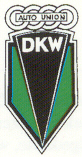
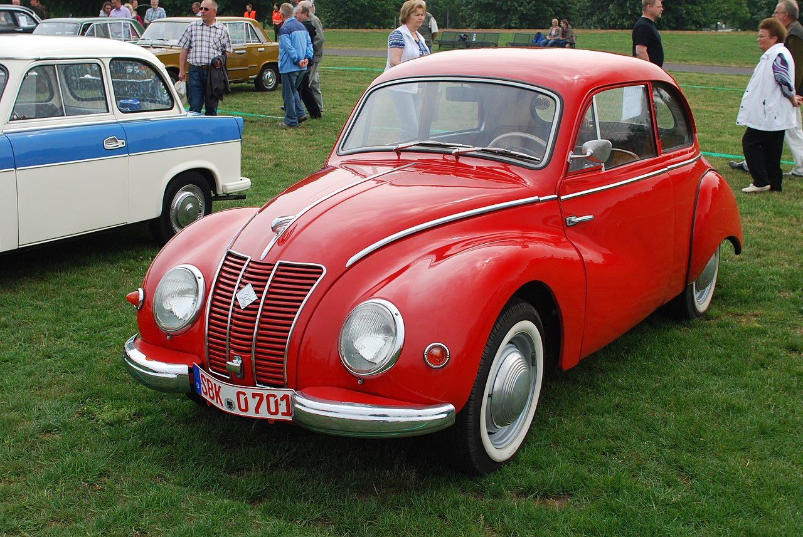
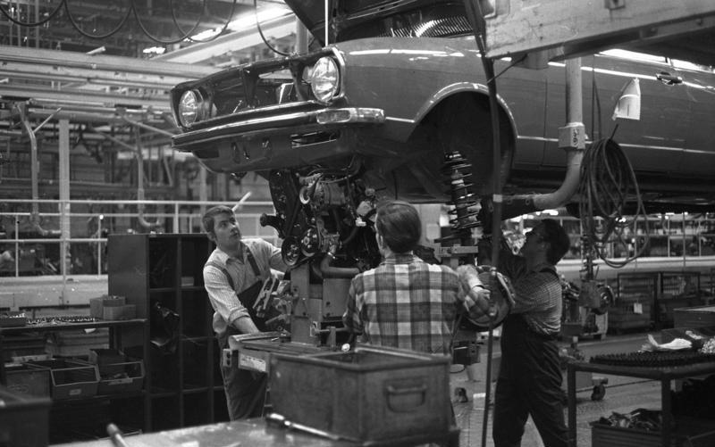
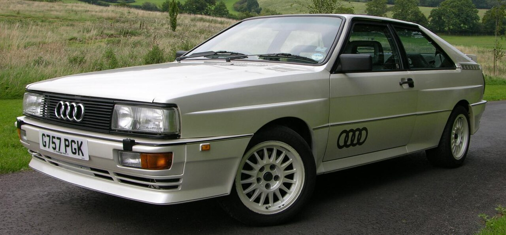
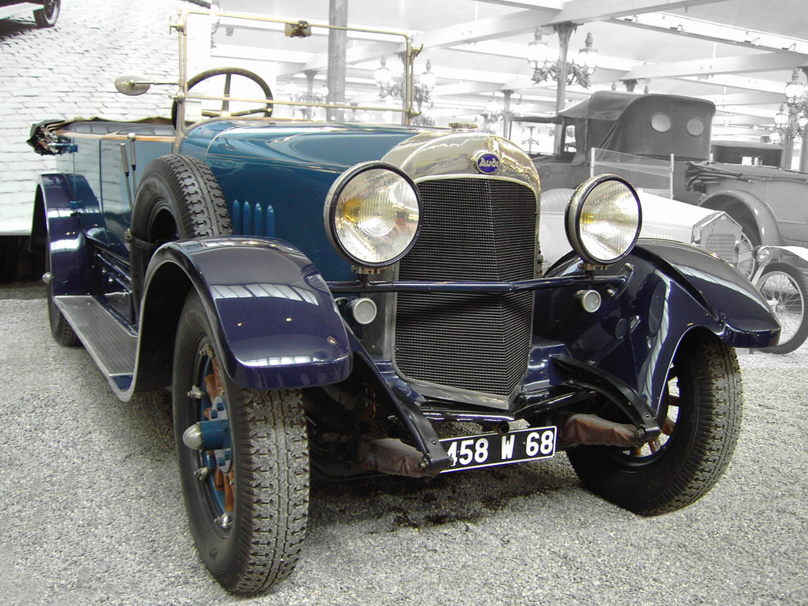

Geboorte van het bedrijf en het ontstaan van de naam

Automobielbedrijf Wanderer werd oorspronkelijk opgericht in 1885
De fusie van de vier bedrijven onder het logo van vier ringen
In augustus 1928 verwierf Jørgen Rasmussen, de eigenaar van Dampf-Kraft-Wagen (DKW),
Na de Tweede Wereldoorlog
IFA F9 Zoals de meeste Duitse productiebedrijven, werden de Auto Union-fabrieken aan het begin van
 Nieuwe Auto Union-eenheid
In Ingolstadt werd een nieuwe West-Duitse Auto Union met hoofdkantoor gelanceerd met leningen
Moderne tijd
Deelnamecertificaat van de Audi NSU Auto Union AG, afgegeven in augustus 1969
 